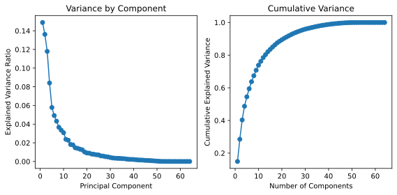
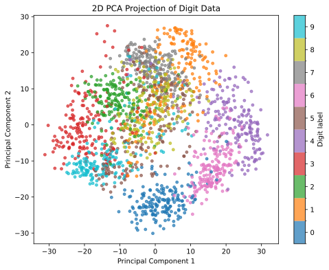
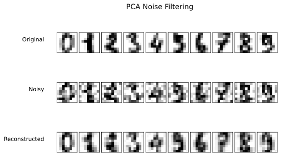

Unsupervised learning investigates structure in features without using a specified outcome to guide fitting. Unlike the prediction tasks in Chapter 11, its aim may be to summarize correlated variables, visualize neighborhoods, or group similar observations. The learning settings in Chapter 10 provide the broader context. This chapter develops principal component analysis, manifold learning, stochastic neighbor embedding, and K-means clustering.
The examples use three settings: pixel intensities in digit images, variation among handwritten digits in MNIST, and measurements of Iris flowers. Known labels help interpret plots and define the one-digit subset used below. Within each selected subset, the methods fit components, embeddings, or cluster centers from features (Hastie et al., 2009; VanderPlas, 2016).
Different methods preserve different features of the data. PCA finds linear directions of large variance; Isomap uses distances along a neighborhood graph; t-SNE targets local probabilistic similarities; and K-means minimizes within-cluster squared distances. A revealing plot or a compact grouping is evidence about that representation, not proof of natural categories or a causal explanation.
12.1 Principal Component Analysis
Principal Component Analysis (PCA) is a dimensionality reduction technique that transforms a dataset with potentially correlated features into a set of uncorrelated components. These components are ordered by the amount of variance each one captures, allowing PCA to summarize the data structure while retaining directions of large variance. This approach is widely used in unsupervised learning, particularly for data compression and noise reduction (Hastie et al., 2009; VanderPlas, 2016).
12.1.1 Theory
PCA works by identifying directions, or “principal components,” along which the variance of the data is maximized. Let \(X\) be a dataset with \(n\) observations and \(p\) features, represented as an \(n \times p\) matrix. The principal directions are derived from the eigenvectors of the data’s covariance matrix, representing directions of greatest variation. Geometrically, imagine an ellipsoid describing the spread of the observations: its long axes indicate directions of large variance, while short axes indicate directions of small variance. PCA rotates the coordinate system to these axes; it does not fit a nonlinear surface through the data.
Scaling and Centering: Decide which units should define variation. Features are often standardized to have zero mean and unit variance so that large measurement scales do not dominate. This gives equal marginal variances, not equal loadings in every component. Let \(X\) denote the data in the chosen units, and center each column to form \(X_c\). Standardization is a modeling choice; it is not required when the original common units are the intended basis of comparison.
Covariance Matrix: Compute the covariance matrix \(S\) of the data as
\[
S = \frac{1}{n-1} X_c^\top X_c,
\]
where \(X_c\) is the centered version of \(X\). This matrix measures how pairs of features vary together.
Eigenvalue Decomposition: The eigenvectors of \(S\) represent the principal components, and the associated eigenvalues quantify the variance each component captures. Write the eigenvalues in decreasing order as \(\lambda_1 \geq \cdots \geq \lambda_p \geq 0\). For nonconstant data, the variance fraction for component \(j\) is \(\lambda_j / \sum_{r=1}^p \lambda_r\), where \(j\) and \(r\) index components.
Dimensionality Reduction: Select the top \(k\) eigenvectors with the largest eigenvalues and project the centered data onto them: \[
X_{\text{reduced}} = X_c W_k,
\] where \(W_k\) is a \(p \times k\) matrix of orthonormal eigenvectors and \(X_{\text{reduced}}\) contains the \(n \times k\) component scores. The integer \(k\), with \(1 \leq k \leq p\), specifies how many directions are retained. The retained variance depends on that choice.
12.1.2 Properties of PCA
PCA has several important properties that make it valuable for unsupervised learning:
Variance Maximization: The first principal component is the direction that maximizes variance in the data. Each subsequent component maximizes variance under the constraint of being orthogonal to previous components.
Orthogonality: Principal components are orthogonal to each other, and the resulting component scores are uncorrelated in the sample. Uncorrelated scores need not be statistically independent, and orthogonal directions do not guarantee distinct scientific meanings.
Dimensionality Reduction: By selecting only components with the largest eigenvalues, PCA enables dimensionality reduction while preserving a chosen fraction of the data’s variability. This is especially useful for large datasets.
Reconstruction: If all components are retained, the original data can be perfectly reconstructed. When fewer components are used, the reconstruction is approximate; the omitted directions determine what information is lost.
Sensitivity to Scaling: PCA is sensitive to the scale of input data. Changing units or standardizing can change the directions and the interpretation of the resulting components.
12.1.3 Interpreting PCA Results
The output of PCA provides several insights into the data:
Principal Components: Each principal component represents a linear combination of the original features. The loadings (or weights) for each feature indicate the contribution of that feature to the component. Large weights (positive or negative) suggest that the corresponding feature strongly influences the principal component.
Explained Variance: Each principal component captures a specific amount of variance in the data. The proportion of variance explained by each component helps determine how many components are needed to retain the key information in the data. For example, if the first two components explain 90% of the variance, then these two components are likely sufficient to represent the majority of the data’s structure.
Selecting the Number of Components: The cumulative explained variance plot indicates the total variance captured as more components are included. A common approach is to choose the number of components such that the cumulative variance reaches an acceptable threshold (e.g., 95%). This helps in balancing dimensionality reduction with information retention.
Interpretation of Component Scores: The transformed data points, or “scores,” in the principal component space represent each original observation as a combination of the selected principal components. Observations close together in this space have similar values on the selected components and may indicate similar patterns.
Identifying Patterns and Clusters: By visualizing the data in the reduced space, patterns and clusters may become more apparent, especially in cases where there are inherent groupings in the data. These patterns can provide insights into underlying relationships between observations.
PCA offers a compact representation, but the amount of information lost must be assessed for the intended task. Variance is the criterion being optimized; a low-variance feature can still matter for prediction or scientific interpretation. Scikit-learn stores the principal directions as rows of components_, so its transpose corresponds to \(W_k\) when \(k\) components are fitted.
12.1.4 Example: PCA on Digit Images
The 8x8 digit dataset contains grayscale images of handwritten digits (0 through 9), each stored as an 8x8 grid of pixel intensities. Each pixel intensity serves as a feature, giving 64 features per image. The dataset has 1,797 observations and is available locally through scikit-learn’s load_digits. It is a different dataset from the 28×28 MNIST images used later in the chapter. All pixels have the same intensity units, so we use centered, unstandardized pixels in this example. Digit labels are used only for display.
12.1.4.1 Loading and Visualizing the Data
We begin by loading the data and displaying a few sample images to understand its structure.
# Import required librariesimport matplotlib.pyplot as pltimport pandas as pdfrom matplotlib_inline.backend_inline import set_matplotlib_formatsfrom sklearn.datasets import load_digitsset_matplotlib_formats("svg")# Load the 8x8 digit datasetdigits = load_digits()X = digits.data # feature matrix: 64 features (8x8 pixels)y = digits.target # target labels (0-9 digit classes)# Display the shape of the dataprint("Feature matrix shape:", X.shape)print("Target vector shape:", y.shape)# Plot some sample images from the datasetfig, axes = plt.subplots(2, 5, figsize=(8, 4))for i, ax inenumerate(axes.flat): ax.imshow(X[i].reshape(8, 8), cmap='gray') ax.set_title(f"Digit: {y[i]}") ax.axis('off')plt.suptitle("Sample Images from 8x8 Digit Dataset", fontsize=16)plt.show()
Figure 12.1: Sample 8×8 grayscale images from the handwritten digit dataset.
After visualizing the data, we note:
Each digit corresponds to an 8×8 grid of pixels, forming a 64-dimensional feature space.
Despite the high dimensionality, many features (pixels) are correlated or redundant.
PCA can therefore help summarize the data while retaining essential structure.
Because the dataset is high-dimensional, PCA can address several key questions:
Dimensionality Reduction: Can we reduce the dataset’s dimensionality while preserving the essential structure of each digit? This simplification may improve visualization and computational efficiency.
Variance Explained: How many principal components are needed to capture most of the variance? Determining this shows how many components are needed to summarize pixel variation.
Cluster Structure: Do distinct clusters appear in the reduced component space? Plotting the first few components may reveal natural groupings by digit class.
12.1.4.2 Performing PCA and Plotting Variance Contribution
We now apply PCA to the digit data and examine how much variance each principal component explains. This analysis helps determine the number of components that provide a good balance between dimensionality reduction and information retention.
# Import the PCA modulefrom sklearn.decomposition import PCAimport numpy as np# Initialize PCA without specifying the number of componentspca = PCA(svd_solver="full")X_pca = pca.fit_transform(X)# Calculate the explained variance ratio for each componentexplained_variance = pca.explained_variance_ratio_cumulative_variance = np.cumsum(explained_variance)# Plot variance contributionsfig, axes = plt.subplots(1, 2, figsize=(8, 4))# Individual explained varianceaxes[0].plot( np.arange(1, len(explained_variance) +1), explained_variance, marker="o")axes[0].set_xlabel("Principal Component")axes[0].set_ylabel("Explained Variance Ratio")axes[0].set_title("Variance by Component")# Cumulative explained varianceaxes[1].plot( np.arange(1, len(cumulative_variance) +1), cumulative_variance, marker="o")axes[1].set_xlabel("Number of Components")axes[1].set_ylabel("Cumulative Explained Variance")axes[1].set_title("Cumulative Variance")fig.tight_layout()plt.show()

Figure 12.2: Variance contribution of each principal component and cumulative explained variance for the digit dataset.
The plots in Figure 12.2 show how variance is distributed across components.
Variance by Component: The left panel displays the variance explained by each component. Components with larger contributions represent the most informative directions of variation.
Cumulative Variance: The right panel shows the cumulative variance as the number of components increases. The curve helps identify an efficient cutoff for dimension reduction.
To select the number of components:
Variance Threshold: Select the smallest number of components that explain a desired proportion of variance, such as 90% or 95%.
Elbow Method: Choose the elbow point on the cumulative variance curve, balancing compactness and representational accuracy.
In this dataset, the first 10 components account for about 74% of the variance. Retaining 21 components reaches 90%, and retaining 29 reaches 95%. The first 50 account for more than 99.9%. These thresholds summarize pixel variance, not digit-classification accuracy.
PCA can also be used to visualize high-dimensional data in a lower- dimensional space. Here we project the digit data onto the first two and first three principal components to observe how well PCA captures the underlying structure and whether the digits form distinct clusters in reduced dimensions.
from matplotlib.colors import BoundaryNormfrom sklearn.decomposition import PCAimport matplotlib.pyplot as plt# Apply PCA for 2D and 3D projectionspca_2d = PCA(n_components=2, svd_solver="full")X_pca_2d = pca_2d.fit_transform(X)pca_3d = PCA(n_components=3, svd_solver="full")X_pca_3d = pca_3d.fit_transform(X)# Discrete colors identify the ten digit labels.digit_norm = BoundaryNorm(np.arange(-0.5, 10.5, 1), 10)# 2D projectionplt.figure(figsize=(8, 6))scatter = plt.scatter(X_pca_2d[:, 0], X_pca_2d[:, 1], c=y, cmap="tab10", norm=digit_norm, s=15, alpha=0.7)plt.xlabel("Principal Component 1")plt.ylabel("Principal Component 2")plt.title("2D PCA Projection of Digit Data")plt.colorbar(scatter, label="Digit label", ticks=range(10))plt.show()

Figure 12.3: A two-dimensional PCA projection of the 8×8 digit data. Labels color the points but do not enter the PCA fit.
The third component adds another direction of pixel variation. We plot the three-dimensional scores below with the same colors for digit labels.
Figure 12.4: A three-dimensional PCA projection of the same digit images, with labels added after fitting.
The projections in Figure 12.3 and Figure 12.4 place each image in a space defined by two or three principal directions. Several observations help interpret these displays:
Grouping and Overlap: Some similarly labeled digits occupy nearby regions, while other labels overlap. PCA maximizes pixel variance, rather than class separation. A two-dimensional overlap does not imply that the original 64-dimensional images are indistinguishable.
Variance Retained: The first three components account for about 40% of the total variance. The projection is useful for exploration, but most variance lies outside the displayed axes.
Additional Dimensions: More components improve reconstruction of the pixels. Whether that improvement helps a later classifier or another analysis must be evaluated for that task.
The plots demonstrate a useful compression and visualization method, while the variance summary makes the cost of that compression visible.
12.1.4.4 PCA in Noise Filtering
PCA can also be applied for denoising data by reconstructing it from a subset of principal components. Omitting small-variance directions can reduce noise when signal is concentrated in the retained directions; it can also discard genuine detail. This is an assumption to assess, not a property guaranteed by small eigenvalues alone. We demonstrate this effect using the digit dataset through the following steps:
Add Random Noise: Add random noise to the original digit images.
Fit PCA to Noisy Data: Apply PCA to the noisy data, selecting enough components to retain 50% of the variance.
Reconstruct the Digits: Use PCA’s inverse transform to reconstruct the digits from the reduced components, effectively filtering out the noise.
Display the Results: Show a side-by-side comparison of the original, perturbed, and reconstructed images for visual assessment.
import numpy as npimport matplotlib.pyplot as pltfrom sklearn.decomposition import PCAfrom sklearn.datasets import load_digitsdef plot_digits(datasets, titles):""" Display ten digit images per row for each dataset in `datasets`. Parameters ---------- datasets : list of np.ndarray Each array has shape (n_samples, 64), representing different versions of the digit data (e.g., original, noisy, reconstructed). titles : list of str Titles corresponding to each dataset (e.g., ["Original", "Noisy", "Reconstructed"]). """ fig, axes = plt.subplots(len(datasets), 10, figsize=(8, 5), subplot_kw={"xticks": [], "yticks": []}, gridspec_kw=dict(hspace=0.2, wspace=0.1))for row, (data, title) inenumerate(zip(datasets, titles)):for i, ax inenumerate(axes[row]): ax.imshow(data[i].reshape(8, 8), cmap="binary", interpolation="nearest", clim=(0, 16)) axes[row, 0].set_ylabel(title, rotation=0, labelpad=25, fontsize=11, ha="right") fig.subplots_adjust(left=0.15, top=0.88) plt.suptitle("PCA Noise Filtering", fontsize=14) plt.show()# Load the digit datasetdigits = load_digits()X = digits.data# Add Gaussian noiserng = np.random.default_rng(2026)noise = rng.normal(0, 4, X.shape)X_noisy = X + noise# Fit PCA to retain 50% of total variancepca_50 = PCA(0.50, svd_solver="full")X_pca_50 = pca_50.fit_transform(X_noisy)X_reconstructed_50 = pca_50.inverse_transform(X_pca_50)# Display resultsplot_digits([X, X_noisy, X_reconstructed_50], ["Original", "Noisy", "Reconstructed"])

Figure 12.5: Noise filtering using PCA: original, noisy, and reconstructed digit images.
The visualization in Figure 12.5 highlights PCA’s ability to filter out random noise:
Original vs. Noisy Images: The second row shows the effect of added random noise, making the digits less recognizable.
Reconstructed Images: In the third row, PCA has filtered out much of the random noise, reconstructing cleaner versions of the digits while smoothing some genuine details as well. This illustrates the tradeoff between noise suppression and loss of image detail.
Because the clean images are known here, we can calculate the mean squared pixel error before and after reconstruction rather than judging only the displayed images. The 50% variance threshold retains 12 components and reduces the error from about 15.91 to 7.27 in this run. Both the noisy pixels and their reconstructions are displayed on the same 0–16 grayscale range; the error calculation uses their actual values.
This is an in-sample demonstration of denoising, not a test on new images. When PCA is used before a supervised model, fit it only on that model’s training records, including within each cross-validation fold.
12.2 Manifold Learning
Some datasets vary along a small number of nonlinear directions even though each observation has many recorded features. Manifold learning investigates such structure through lower-dimensional coordinates. A linear projection can miss a curved arrangement of observations; neighborhood methods use local relationships to construct another representation. The result depends on both the measured features and the neighborhoods chosen (VanderPlas, 2016).
12.2.1 Isomap
Isometric mapping, or Isomap, connects each observation to nearby observations, weights those graph edges by feature-space distances, and uses shortest-path distances to approximate travel along the underlying structure. It then seeks low-dimensional coordinates that represent those graph distances. The neighbor count matters: too few neighbors may disconnect the graph, while too many can create shortcuts across a curved structure (scikit-learn Developers, 2026b).
12.2.2 MNIST Example
The earlier notes use MNIST for two Isomap displays: a subset containing all ten digits and a subset containing only handwritten “1”s. We retain both. Each MNIST image has 28×28 pixels, giving 784 features, and is distinct from the 8×8 digit data in the PCA example. We fetch MNIST once and reuse it for the t-SNE example. OpenML caches the download locally; the first download includes the complete 70,000-image dataset even though the fits below use smaller subsets.
The 48 images below retain the earlier example’s sampling positions, spaced across the stored dataset. They illustrate handwriting variation rather than a random sample from a specified population.
Figure 12.6: Forty-eight MNIST images sampled at fixed positions in the dataset.
We take every thirtieth image, giving 2,334 observations, to keep the pairwise-distance calculations manageable. The model uses five neighbors. We first check that its undirected neighbor graph is connected; otherwise, shortest-path distances between some observations would be undefined without additional graph completion.
The graph has one connected component for this subset. That is a necessary check, not a guarantee that the neighborhood choices describe handwriting variation well. Isomap estimates coordinates without the digit labels; the labels are added afterward to help interpret the display.
Figure 12.7: Isomap coordinates for every thirtieth MNIST image, colored by digit label after fitting.
12.2.3 Variation within One Digit
The second display maps every fourth image labeled “1”, retaining 1,970 images. Restricting to one digit lets us examine variation in its writing style rather than differences among all ten classes. This selection uses labels to define the observations under study, but the embedding itself still fits only pixel values.
The thumbnail helper from the earlier notes is adapted from the Python Data Science Handbook(VanderPlas, 2016). It plots the fitted coordinates and places image thumbnails only when they are sufficiently far from previously placed thumbnails. Omitting a thumbnail prevents visual overlap; it does not remove an observation from the fit.
from matplotlib import offsetbox# Adapted from Jacob VanderPlas, Python Data Science Handbook (2016).# The original plotting helper is MIT-licensed; see licenses/vanderplas-mit.txt.def plot_components(data, model, images=None, ax=None, thumb_frac=0.05, cmap="gray"): ax = ax if ax isnotNoneelse plt.gca() proj = model.fit_transform(data) ax.plot(proj[:, 0], proj[:, 1], ".k", markersize=2)if images isnotNone: min_dist_2 = (thumb_frac * np.ptp(proj, axis=0).max()) **2 shown_images = []for i inrange(data.shape[0]):if shown_images: dist = np.sum((np.asarray(shown_images) - proj[i]) **2, axis=1)if np.min(dist) < min_dist_2:continue shown_images.append(proj[i]) imagebox = offsetbox.AnnotationBbox( offsetbox.OffsetImage(images[i], cmap=cmap), proj[i] ) ax.add_artist(imagebox)return proj
We now use that helper to display handwriting examples at their Isomap coordinates. Neighbors on this map can be inspected for changes in slant, stroke placement, or thickness. Those visual patterns require inspection; the coordinate axes are not predefined measurements of those properties.
Figure 12.8: An Isomap view of handwritten ones, with selected image thumbnails overlaid on the fitted coordinates.
12.3 Stochastic Neighbor Embedding
Stochastic Neighbor Embedding (SNE) is a dimensionality reduction technique used to project high-dimensional data into a lower-dimensional space (often 2D or 3D) while preserving local neighborhoods of points. It is particularly popular for visualization tasks, helping to reveal clusters or groupings among similar points. Key characteristics include:
Unsupervised: It does not require labels, relying on similarity or distance metrics among data points.
Probabilistic framework: Pairwise distances in the original space are interpreted as conditional probabilities, which SNE attempts to replicate in the lower-dimensional space.
SNE aims to construct a low-dimensional representation that preserves the local neighborhood relationships observed in the original high-dimensional data. The method achieves this by matching probabilistic similarities between points across the two spaces.
Let \(x_i \in \mathbb{R}^p\) denote observation \(i\), where \(p\) is the number of features and \(i = 1, \ldots, n\) indexes the \(n\) observations. Let \(y_i \in \mathbb{R}^d\) denote its embedding coordinate, where \(d\) is the chosen low dimension. These \(y_i\) are coordinates, not class labels.
For each point \(x_i\) in the high-dimensional space, SNE defines a conditional probability \(p_{j|i}\) that measures how likely \(x_j\) would be chosen as a neighbor of \(x_i\). The probability is modeled as
where \(\sigma_i > 0\) is a bandwidth controlling neighborhood size, \(j \neq i\) indexes a possible neighbor, and \(k\) indexes the other observations in the denominator. The norm is Euclidean distance. Self-similarities are excluded. The bandwidth is typically adjusted to match a specified perplexity, an effective number of neighbors.
Each high-dimensional point \(x_i\) is mapped to a low-dimensional coordinate \(y_i\), from which a corresponding similarity distribution is defined as
Denote by \(P_i = \{p_{j|i}\}_{j \neq i}\) and \(Q_i = \{q_{j|i}\}_{j \neq i}\) the conditional probability distributions for point \(i\) in the high- and low-dimensional spaces, respectively. The optimal embedding \(\{y_i\}\) minimizes the Kullback–Leibler (KL) divergence between the two conditional distributions:
This optimization encourages points that are close in the high-dimensional space to remain close in the lower-dimensional map (Hinton & Roweis, 2002).
The asymmetry of the KL divergence in SNE plays a central role in how local structure is preserved. Because the divergence \(\text{KL}(P_i \| Q_i)\) penalizes situations where a true neighbor \(x_j\) (with high \(p_{j|i}\)) is assigned a low similarity \(q_{j|i}\) in the low-dimensional map, the optimization strongly discourages breaking apart neighborhoods that exist in the original space. In contrast, pairs of distant points with small \(p_{j|i}\) values contribute little to the objective even if they are mapped close together. This asymmetry biases the optimization toward accurately reproducing local relationships rather than global geometry. While this focus on local preservation is desirable for visualizing complex data manifolds, it can also cause points from different neighborhoods to become compressed together, a phenomenon known as the crowding problem.
The later t-SNE algorithm addresses this issue by symmetrizing the joint probabilities and replacing the Gaussian kernel in the low-dimensional space with a Student-\(t\) distribution to allow for heavier tails and better separation of clusters.
The perplexity of \(P_i\) is \(2^{H(P_i)}\), where \(H(P_i) = -\sum_{j \neq i} p_{j|i}\log_2 p_{j|i}\) is its entropy in bits. A larger perplexity generally asks the similarities to account for a wider neighborhood; it does not specify a number of clusters.
12.3.2 t-SNE Variation
The t-distributed Stochastic Neighbor Embedding (t-SNE) modifies SNE to overcome two major limitations: the crowding problem and the asymmetry of conditional probabilities. These refinements improve both optimization stability and visual interpretability of the resulting low-dimensional map.
The crowding problem arises because, in high-dimensional spaces, many moderately separated neighbors can surround a point, and these relationships may not fit into two or three dimensions without distortion. As a result, points that are moderately distant in the original space may become crowded together in the low-dimensional map. To mitigate this issue, t-SNE replaces the Gaussian kernel in the low-dimensional space with a Student-\(t\) distribution with one degree of freedom, which has heavier tails and allows distant points to remain farther apart.
To simplify computation and ensure that similarity is mutual, t-SNE also defines symmetric joint probabilities as \(p_{ij} = (p_{j|i} + p_{i|j}) / (2n)\) for \(i \neq j\), producing a symmetric similarity matrix. Set \(p_{ii} = 0\) and \(q_{ii} = 0\) so that self-pairs do not enter the objective.
The corresponding similarity in the low-dimensional space is defined as
The indices \(a\) and \(b\) run over all distinct pairs in the denominator, so the joint similarities sum to one.
The t-SNE algorithm minimizes the Kullback–Leibler divergence between the joint probabilities \(\{p_{ij}\}\) and \(\{q_{ij}\}\) with respect to the embedding coordinates \(\{y_i\}\):
\[
C = \sum_{i}\sum_{j \neq i} p_{ij}\log\!\frac{p_{ij}}{q_{ij}}.
\]
By combining symmetric similarities and heavy-tailed distributions, t-SNE aims to preserve local structure while allowing similar observations to occupy nearby regions of the map (van der Maaten & Hinton, 2008).
12.3.3 Supervised Variation
While SNE and t-SNE are fundamentally unsupervised methods, they can be extended to incorporate available label information. In supervised or semi-supervised variants, the similarity structure is adjusted so that points sharing the same label are drawn closer together, whereas points from different classes are pushed apart through modified distance weights or additional penalty terms in the loss function. These extensions aim to retain neighborhood relationships while promoting class separation in the low-dimensional embedding. The balance between these goals is a modeling choice. Such hybrid formulations are particularly useful when partial label information is available and the goal is to combine supervised guidance with unsupervised neighborhood discovery.
12.3.4 A t-SNE Example with MNIST
We retain the earlier example using t-SNE on the first 2,000 MNIST images. The data have already been fetched in the Isomap example. This example illustrates how t-SNE projects high-dimensional image data, each represented by a 784-dimensional vector, in a two-dimensional space. The resulting visualization reveals clusters corresponding to different digits, providing an intuitive view of how similar handwriting patterns group together in the embedding space.
Figure 12.9: A t-SNE map of the first 2,000 MNIST images. Digit labels color the points after the unsupervised fit.
The colors let us inspect how the unsupervised neighborhoods correspond to digit labels. Some labels occupy relatively compact regions, while others overlap or split across the map. Inspect representative images before attributing an overlap to a particular handwriting feature.
The axes have no direct pixel-unit interpretation. Cluster sizes and large gaps between groups should not be read as original-space densities or distances. Perplexity and initialization can change the display; use other settings and the original data to check an apparent pattern (scikit-learn Developers, 2026b). Standard scikit-learn TSNE fits coordinates for the supplied observations; it does not provide a transform method for projecting new observations as PCA does.
12.4 K-Means Clustering
K-means clustering is one of the simplest and most widely used unsupervised algorithms. It groups observations using feature-space distances, without using outcome labels. Unlike a dimension-reduction map, its fitted result is a set of centers and assignments to groups (Hastie et al., 2009).
K-means clustering aims to divide a dataset into non-overlapping groups based on similarity. Given a set of data points, each represented as a vector in a multi-dimensional space, the algorithm assigns each point to one of \(k\) clusters in a way that minimizes the variation within each cluster. This is done by reducing the sum of squared distances between each point and its assigned cluster center. Mathematically, for \(n\) observations with \(p\) features and \(k\) nonempty clusters, we seek to minimize the within-cluster sum of squares
where \(S_i\) represents each cluster and \(\boldsymbol{\mu}_i\) is the mean of the points within that cluster, and \(\boldsymbol{x}\) is a \(p\)-dimensional observation. The symbol \(\|\cdot\|\) denotes Euclidean norm. The centroids are \(p\)-dimensional vectors, even when we display only two features.
12.4.1 Lloyd’s Algorithm
K-means clustering is typically solved using Lloyd’s algorithm, which operates iteratively as follows:
Initialization: Select \(k\) initial cluster centroids \(\boldsymbol{\mu}_i\); repeated randomized initializations reduce sensitivity to a particular starting configuration.
Iteration:
Assignment step: Assign each point \(\boldsymbol{x}\) to the cluster whose centroid is closest based on the squared Euclidean distance.
Update step: Recompute the centroids as the mean of all points assigned to each cluster:
\[
\boldsymbol{\mu}_i \leftarrow \frac{1}{|S_i|}
\sum_{\boldsymbol{x}_j \in S_i} \boldsymbol{x}_j,
\] where \(|S_i|\) is the number of observations in cluster \(i\) and \(j\) indexes an observation in that cluster. Empty clusters require an implementation-specific reassignment rule.
Termination: The process stops when either the assignments no longer change or a predefined number of iterations is reached.
Each iteration decreases or leaves unchanged the objective until a local solution is reached. Repeated starts do not guarantee the global minimum. The choice of units and any standardization define which feature-space distances the algorithm minimizes.
12.4.2 Example: Iris Data
K-means clustering can be implemented using the scikit-learn library. Below, we apply it to the Iris dataset, which contains 150 flowers with four measurements each. We use the first two features, sepal length and sepal width in centimeters. Both are in the same units, and we fit on these original scales. Species labels are used only for comparison. We set \(k = 3\) for this illustration; the availability of three species does not establish that three distance-based clusters are optimal.
import pandas as pdimport numpy as npimport matplotlib.pyplot as pltfrom sklearn import datasetsfrom sklearn.cluster import KMeans
# Load the Iris datasetiris = datasets.load_iris()X = iris.data[:, :2] # Sepal length and sepal width, both in centimetersy = iris.target
We visualize the observations based on their true species labels.
The fit uses k-means++ initialization, ten starts, and seed 2026 for reproducibility. The controls n_clusters, n_init, and max_iter affect the solution and computational cost (scikit-learn Developers, 2026a).
K-means provides cluster centroids, representing the center of each cluster.
Figure 12.11: K-means assignments and the three fitted centroids in the original sepal-measurement units.
12.4.2.1 Comparing True and Predicted Labels
By plotting the results side by side, we can see how the distance-based grouping compares with the known species. Cluster IDs are arbitrary: cluster 0 is not necessarily species 0, even if the same colormap is used. The contingency table below compares memberships without treating the numeric IDs as matched class labels.
Figure 12.12: The same Iris observations colored by species and by cluster membership. Numeric cluster IDs do not identify species.
The table shows how observations from each species are distributed across the fitted clusters. An overlap need not be an algorithmic error: K-means minimizes squared distances and has no species labels to optimize.
Once fitted, the model assigns a new feature vector to its nearest cluster center. This is a cluster assignment, not a supervised species prediction.
# Sample test data pointssample_test = np.array([[3, 4], [7, 4]])# Predict cluster assignmentprint("Predicted Clusters:", kmeans.predict(sample_test))
Predicted Clusters: [0 1]
The first illustrative point, with sepal length 3 cm, is outside the observed sepal-length range. A nearest-center assignment can still be computed, but it does not show that the point is a plausible Iris flower.
12.4.4 Discussion
K-means is intuitive but has limitations:
Sensitivity to initialization: Poor initialization can yield suboptimal results. k-means++ mitigates this issue.
Choosing the number of clusters: The choice of \(k\) is critical. The elbow method helps determine an possible range, but it need not reveal a unique best value.
Assumption of spherical clusters: K-means struggles when clusters have irregular shapes. Alternative methods such as kernel-based clustering may be more effective.
Despite its limitations, K-means is a fundamental tool in exploratory data analysis and practical applications.
Exercises
12.1 Investigate the digit PCA representation.
Report the smallest numbers of components needed for 80%, 90%, and 95% explained variance. Plot individual and cumulative variance.
Reconstruct the same images using 5, 15, and 30 components. Display the reconstructions on the same grayscale range and report squared pixel reconstruction errors.
Explain why a two-dimensional PCA plot can overlap by digit label even when more components might support accurate classification.
Describe how centering and scaling affect the fit and where those steps belong if PCA precedes a classifier evaluated by cross-validation.
12.2 Compare the MNIST neighborhood representations.
For the same 2,000 MNIST images, fit Isomap and t-SNE. Plot their coordinates in separate panels and use the same digit-color legend.
Compare two neighbor counts for Isomap and two perplexities for t-SNE. Report the choices and show how the resulting displays change.
Select images from an overlapping or unusual region and display them. Describe what those images support about the apparent pattern.
Explain why distances between separated t-SNE groups cannot be read directly as distances between digit classes in the original features.
12.3 Extend the Iris clustering example.
Fit K-means to the two sepal measurements for \(k = 2, 3, 4, 5, 6\). Plot within-cluster sums of squares against \(k\) and explain why the smallest sum alone cannot choose the number of clusters.
Compare the \(k = 3\) fit in original units with a fit after standardizing the measurements. Show cluster assignments in separate panels and describe the effect of scaling.
Fit K-means using all four measurements and compare species-by-cluster tables with the two-feature version. Explain why this comparison does not turn the original fits into supervised classification.
Repeat a fit with several initializations and report whether membership changes after accounting for arbitrary cluster-ID permutations.
References
Hastie, T., Tibshirani, R., & Friedman, J. (2009). The elements of statistical learning: Data mining, inference, and prediction. Springer.